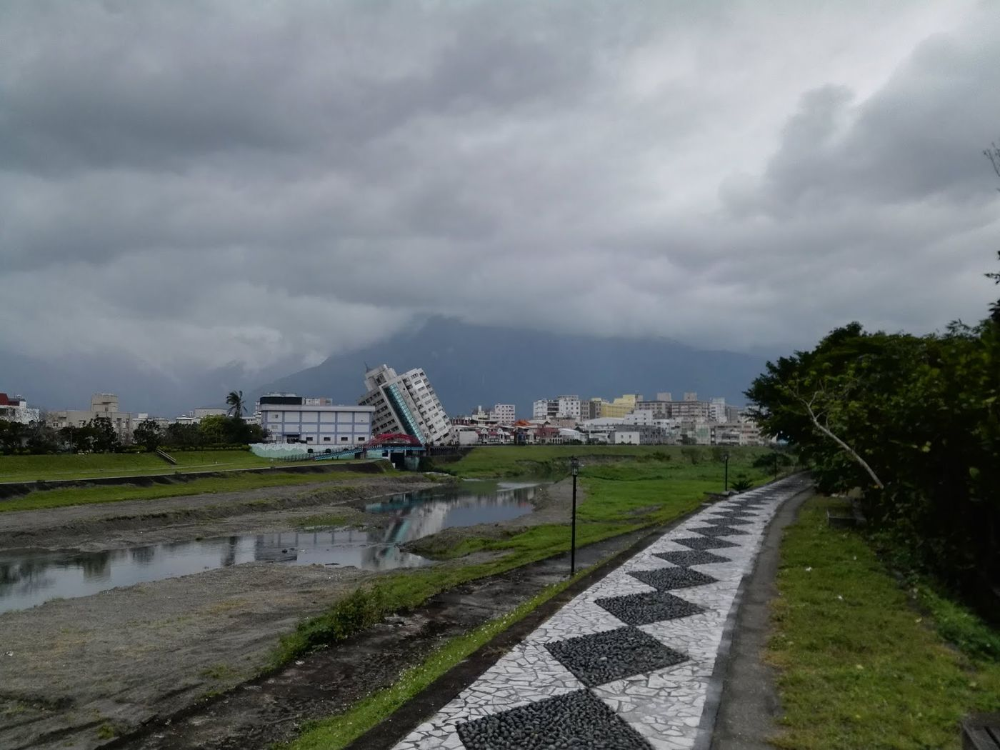
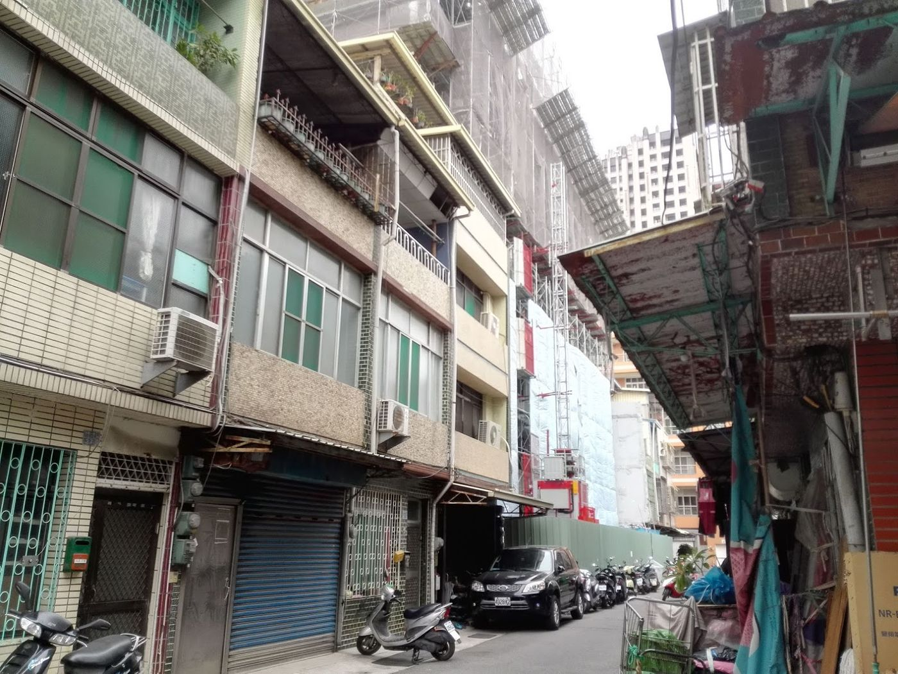

Seismic safety and rebuild
Old buildings are a public-safety issue.
English text is not ready yet; showing Traditional Chinese.

2018 年 2 月 6 日花蓮地震震垮多棟建築；雲門翠堤單棟就有 14 人死亡。我帶孩子去東部勘災七天——倒塌不是新聞畫面，是鄰居與結構的共同失敗。
台灣早期不少房子用標準圖蓋，省下請建築師與部分程序成本。時代變了，耐震要求與使用方式都變了，該重建的不能永遠用懷舊拖延。
2020 年 3 月，我勘驗一棟斷層附近的新屋。疫情之後，我們更該檢討：風險揭露、設計責任、都更誘因是否對齊公共安全。
工程師看房子，看的是構件與路徑；社會看房子，看的是價格與學區。兩者之間缺翻譯，死傷就會用悲劇來翻譯。
重建不是炒作的另一個名字。它是把人從不可接受的風險裡撤出來——用政策與技術，而不是用祈禱。


Source: Taiwan's Great Future — Switzerland Today, Taiwan Tomorrow — Eugene Chang · 3. Housing & building